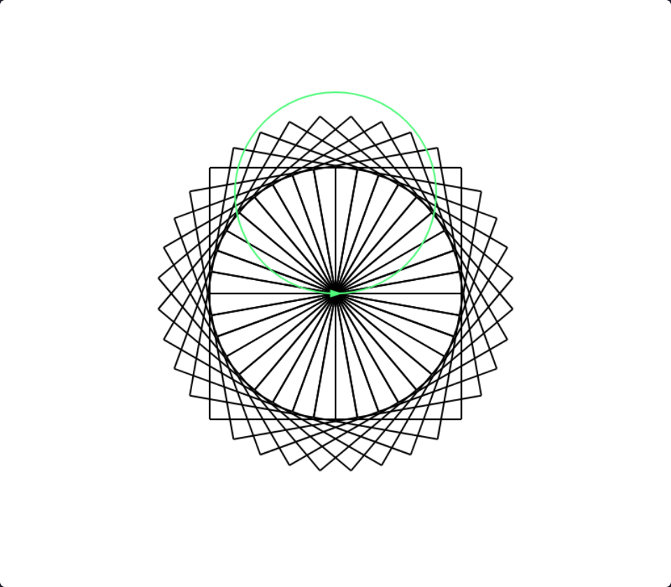

pydle
_
FREE · OPEN SOURCE
Python REPL and
turtle editor
CPython in WebAssembly, so no server is involved. Programs save to browser storage or download as a .py file.
pydle.uk
github.com/thebillington/pydle

spiral.py
1
import turtle as t
2
3
t.speed(0)
4
t.bgcolor("white")
5
t.pensize(2)
6
7
for i in range(36):
8
for _ in range(4):
9
t.forward(150)
10
t.right(90)
11
t.right(10)
12
13
t.pencolor("#50fa7b")
14
t.pensize(5)
15
t.circle(120)